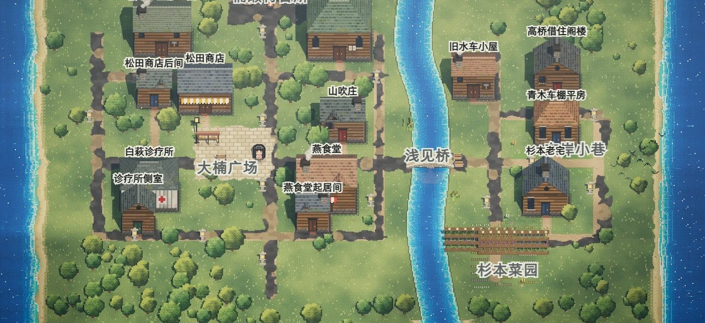

第 1 天 10:39

小镇放映室
街上发生了什么
跳到片段
下载完整演示雨夜纯享
雨落浅见桥
第一天的实机记录
翻一页居民手记
Windows 64 位体验版
去镇上走走
解压后双击「启动小镇.exe」。八位居民从上午十点半开始生活。进入「设定 → 居民模型」，可选订阅、API 或本地部署。

小镇放映室
雨夜纯享
第一天的实机记录
第 1 天 10:39
Windows 64 位体验版
解压后双击「启动小镇.exe」。八位居民从上午十点半开始生活。进入「设定 → 居民模型」，可选订阅、API 或本地部署。